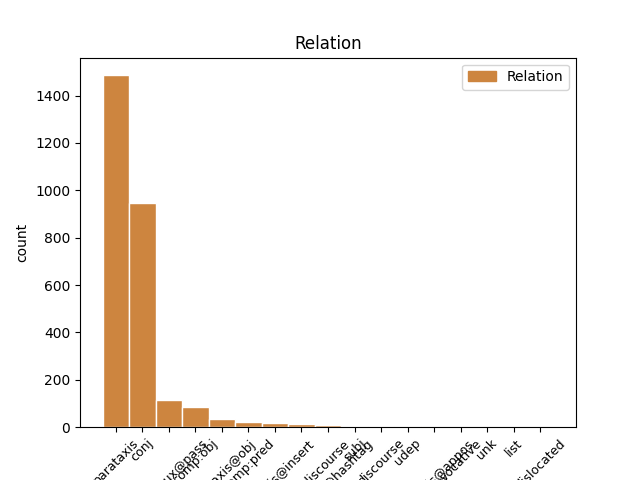
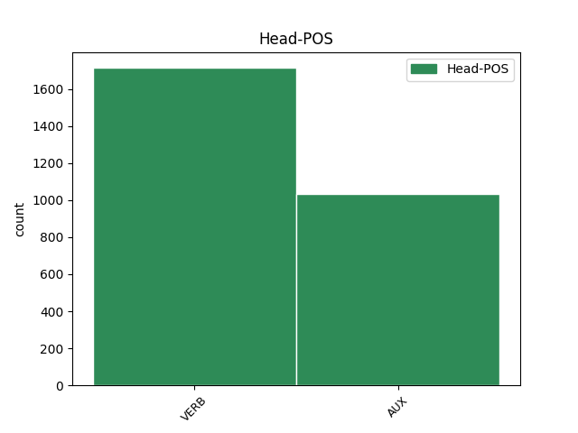
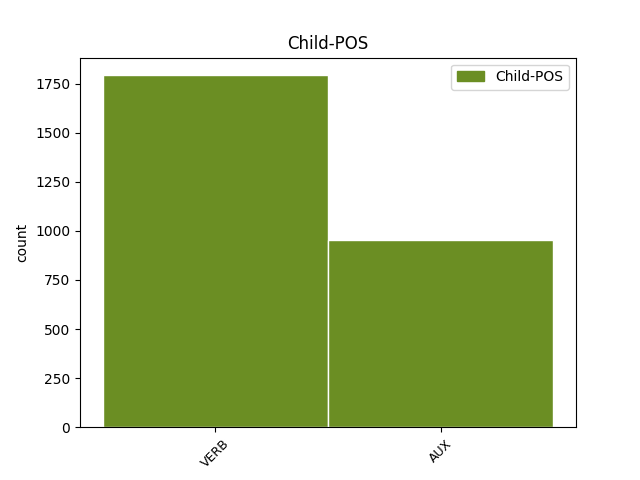

Distribution of features within this leaf



Agreement Rules sorted by frequency.
- When the dependent token is the parataxis(parataxis) of the head token,
1 @user _ _ _ _ 0 _ _ _
2 " _ _ _ _ 0 _ _ _
3 La _ _ _ _ 0 _ _ _
4 vita _ _ _ _ 0 _ _ _
5 e _ _ _ _ 0 _ _ _
6 i _ _ _ _ 0 _ _ _
7 sogni _ _ _ _ 0 _ _ _
8 sono essere AUX V Mood=Ind|Number=Plur|Person=3|Tense=Pres|VerbForm=Fin 0 _ _ _
9 fogli _ _ _ _ 0 _ _ _
10 di _ _ _ _ 0 _ _ _
11 uno _ _ _ _ 0 _ _ _
12 stesso _ _ _ _ 0 _ _ _
13 libro _ _ _ _ 0 _ _ _
14 : _ _ _ _ 0 _ _ _
15 legger _ _ _ _ 0 _ _ _
16 li _ _ _ _ 0 _ _ _
17 in _ _ _ _ 0 _ _ _
18 ordine _ _ _ _ 0 _ _ _
19 è essere AUX V Mood=Ind|Number=Sing|Person=3|Tense=Pres|VerbForm=Fin 8 parataxis _ _
20 vivere _ _ _ _ 0 _ _ _
21 , _ _ _ _ 0 _ _ _
22 sfogliar _ _ _ _ 0 _ _ _
23 li _ _ _ _ 0 _ _ _
24 a _ _ _ _ 0 _ _ _
25 caso _ _ _ _ 0 _ _ _
26 è _ _ _ _ 0 _ _ _
27 sognare _ _ _ _ 0 _ _ _
28 . _ _ _ _ 0 _ _ _
29 " _ _ _ _ 0 _ _ _
30 #aforismiquotidiani _ _ _ _ 0 _ _ _
1 #Grillo _ _ _ _ 0 _ _ _
2 non _ _ _ _ 0 _ _ _
3 mi _ _ _ _ 0 _ _ _
4 piace piacere VERB V Mood=Ind|Number=Sing|Person=3|Tense=Pres|VerbForm=Fin 0 _ _ _
5 , _ _ _ _ 0 _ _ _
6 ma _ _ _ _ 0 _ _ _
7 sta essere AUX VA Mood=Ind|Number=Sing|Person=3|Tense=Pres|VerbForm=Fin 4 conj _ _
8 dimostrando _ _ _ _ 0 _ _ _
9 che _ _ _ _ 0 _ _ _
10 il _ _ _ _ 0 _ _ _
11 nuovo _ _ _ _ 0 _ _ _
12 strumento _ _ _ _ 0 _ _ _
13 per _ _ _ _ 0 _ _ _
14 fare _ _ _ _ 0 _ _ _
15 #politica _ _ _ _ 0 _ _ _
16 è _ _ _ _ 0 _ _ _
17 il _ _ _ _ 0 _ _ _
18 #movimento _ _ _ _ 0 _ _ _
19 multilocale _ _ _ _ 0 _ _ _
20 e _ _ _ _ 0 _ _ _
21 non _ _ _ _ 0 _ _ _
22 il _ _ _ _ 0 _ _ _
23 partito _ _ _ _ 0 _ _ _
24 nazionale _ _ _ _ 0 _ _ _
1 Ciarrapico _ _ _ _ 0 _ _ _
2 : _ _ _ _ 0 _ _ _
3 Comunque _ _ _ _ 0 _ _ _
4 sa sapere VERB V Mood=Ind|Number=Sing|Person=3|Tense=Pres|VerbForm=Fin 0 _ _ _
5 quale _ _ _ _ 0 _ _ _
6 è essere AUX V Mood=Ind|Number=Sing|Person=3|Tense=Pres|VerbForm=Fin 4 comp:obj _ _
7 il _ _ _ _ 0 _ _ _
8 problema _ _ _ _ 0 _ _ _
9 di _ _ _ _ 0 _ _ _
10 il _ _ _ _ 0 _ _ _
11 governo _ _ _ _ 0 _ _ _
12 Monti _ _ _ _ 0 _ _ _
13 ? _ _ _ _ 0 _ _ _
14 Quale _ _ _ _ 0 _ _ _
15 , _ _ _ _ 0 _ _ _
16 senatore _ _ _ _ 0 _ _ _
17 ? _ _ _ _ 0 _ _ _
18 Che _ _ _ _ 0 _ _ _
19 so' _ _ _ _ 0 _ _ _
20 troppo _ _ _ _ 0 _ _ _
21 brutti _ _ _ _ 0 _ _ _
22 #Ahahahahah _ _ _ _ 0 _ _ _
1 Il _ _ _ _ 0 _ _ _
2 pisolino _ _ _ _ 0 _ _ _
3 di _ _ _ _ 0 _ _ _
4 Scilipoti _ _ _ _ 0 _ _ _
5 E' _ _ _ _ 0 _ _ _
6 stato essere AUX VA Gender=Masc|Number=Sing|Tense=Past|VerbForm=Part 0 _ _ _
7 fotografato fotografare VERB V Gender=Masc|Number=Sing|Tense=Past|VerbForm=Part 6 comp:aux@pass _ _
8 da _ _ _ _ 0 _ _ _
9 un _ _ _ _ 0 _ _ _
10 collega _ _ _ _ 0 _ _ _
11 mentre _ _ _ _ 0 _ _ _
12 dormiva _ _ _ _ 0 _ _ _
13 su _ _ _ _ 0 _ _ _
14 il _ _ _ _ 0 _ _ _
15 divano _ _ _ _ 0 _ _ _
16 di _ _ _ _ 0 _ _ _
17 la _ _ _ _ 0 _ _ _
18 sala _ _ _ _ 0 _ _ _
19 di _ _ _ _ 0 _ _ _
20 lettura _ _ _ _ 0 _ _ _
21 di _ _ _ _ 0 _ _ _
22 ... _ _ _ _ 0 _ _ _
23 http://t.co/avF7YGJQ _ _ _ _ 0 _ _ _
1 Governo _ _ _ _ 0 _ _ _
2 Monti _ _ _ _ 0 _ _ _
3 : _ _ _ _ 0 _ _ _
4 Golpe _ _ _ _ 0 _ _ _
5 ? _ _ _ _ 0 _ _ _
6 Alieni _ _ _ _ 0 _ _ _
7 ? _ _ _ _ 0 _ _ _
8 Massoni _ _ _ _ 0 _ _ _
9 ? _ _ _ _ 0 _ _ _
10 : _ _ _ _ 0 _ _ _
11 Il _ _ _ _ 0 _ _ _
12 Tg1 _ _ _ _ 0 _ _ _
13 è essere AUX V Mood=Ind|Number=Sing|Person=3|Tense=Pres|VerbForm=Fin 0 _ _ _
14 attonito _ _ _ _ 0 _ _ _
15 : _ _ _ _ 0 _ _ _
16 ma _ _ _ _ 0 _ _ _
17 chi _ _ _ _ 0 _ _ _
18 sono essere AUX V Mood=Ind|Number=Plur|Person=3|Tense=Pres|VerbForm=Fin 13 parataxis@obj _ _
19 questi _ _ _ _ 0 _ _ _
20 ? _ _ _ _ 0 _ _ _
21 Perché _ _ _ _ 0 _ _ _
22 fra _ _ _ _ 0 _ _ _
23 le _ _ _ _ 0 _ _ _
24 donne _ _ _ _ 0 _ _ _
25 non _ _ _ _ 0 _ _ _
26 ce _ _ _ _ 0 _ _ _
27 n' _ _ _ _ 0 _ _ _
28 è _ _ _ _ 0 _ _ _
29 ne... _ _ _ _ 0 _ _ _
30 http://t.co/0lVOZdTc _ _ _ _ 0 _ _ _
1 @user _ _ _ _ 0 _ _ _
2 compiti _ _ _ _ 0 _ _ _
3 compiti _ _ _ _ 0 _ _ _
4 .. _ _ _ _ 0 _ _ _
5 Ma _ _ _ _ 0 _ _ _
6 io _ _ _ _ 0 _ _ _
7 dico dire VERB V Mood=Ind|Number=Sing|Person=1|Tense=Pres|VerbForm=Fin 8 parataxis@discourse _ _
8 vado andare VERB V Mood=Ind|Number=Sing|Person=1|Tense=Pres|VerbForm=Fin 0 _ _ _
9 a _ _ _ _ 0 _ _ _
10 scuola _ _ _ _ 0 _ _ _
11 e _ _ _ _ 0 _ _ _
12 non _ _ _ _ 0 _ _ _
13 si _ _ _ _ 0 _ _ _
14 fa _ _ _ _ 0 _ _ _
15 un _ _ _ _ 0 _ _ _
16 tubo _ _ _ _ 0 _ _ _
17 , _ _ _ _ 0 _ _ _
18 sto _ _ _ _ 0 _ _ _
19 a _ _ _ _ 0 _ _ _
20 casa _ _ _ _ 0 _ _ _
21 malata _ _ _ _ 0 _ _ _
22 una _ _ _ _ 0 _ _ _
23 sett _ _ _ _ 0 _ _ _
24 e _ _ _ _ 0 _ _ _
25 danno _ _ _ _ 0 _ _ _
26 tutte _ _ _ _ 0 _ _ _
27 le _ _ _ _ 0 _ _ _
28 verifiche _ _ _ _ 0 _ _ _
29 😡 _ _ _ _ 0 _ _ _
1 Penso _ _ _ _ 0 _ _ _
2 che _ _ _ _ 0 _ _ _
3 babbo _ _ _ _ 0 _ _ _
4 natale _ _ _ _ 0 _ _ _
5 sia essere AUX VA Mood=Sub|Number=Sing|Person=3|Tense=Pres|VerbForm=Fin 0 _ _ _
6 un _ _ _ _ 0 _ _ _
7 po _ _ _ _ 0 _ _ _
8 invecchiato _ _ _ _ 0 _ _ _
9 .. _ _ _ _ 0 _ _ _
10 non _ _ _ _ 0 _ _ _
11 sente sentire VERB V Mood=Ind|Number=Sing|Person=3|Tense=Pres|VerbForm=Fin 5 parataxis@insert _ _
12 più _ _ _ _ 0 _ _ _
13 tanto _ _ _ _ 0 _ _ _
14 bene _ _ _ _ 0 _ _ _
15 , _ _ _ _ 0 _ _ _
16 gli _ _ _ _ 0 _ _ _
17 avevo _ _ _ _ 0 _ _ _
18 chiesto _ _ _ _ 0 _ _ _
19 mari _ _ _ _ 0 _ _ _
20 e _ _ _ _ 0 _ _ _
21 monti _ _ _ _ 0 _ _ _
22 ed _ _ _ _ 0 _ _ _
23 invece _ _ _ _ 0 _ _ _
24 mi _ _ _ _ 0 _ _ _
25 ha _ _ _ _ 0 _ _ _
26 portato _ _ _ _ 0 _ _ _
27 Mario _ _ _ _ 0 _ _ _
28 Monti _ _ _ _ 0 _ _ _
29 ! _ _ _ _ 0 _ _ _
1 Mario _ _ _ _ 0 _ _ _
2 #Monti _ _ _ _ 0 _ _ _
3 : _ _ _ _ 0 _ _ _
4 che _ _ _ _ 0 _ _ _
5 #monotonia _ _ _ _ 0 _ _ _
6 il _ _ _ _ 0 _ _ _
7 #postofisso _ _ _ _ 0 _ _ _
8 ... _ _ _ _ 0 _ _ _
9 il _ _ _ _ 0 _ _ _
10 web _ _ _ _ 0 _ _ _
11 insorge _ _ _ _ 0 _ _ _
12 . _ _ _ _ 0 _ _ _
13 il _ _ _ _ 0 _ _ _
14 web _ _ _ _ 0 _ _ _
15 ? _ _ _ _ 0 _ _ _
16 io _ _ _ _ 0 _ _ _
17 pensavo pensare VERB V Mood=Ind|Number=Sing|Person=1|Tense=Imp|VerbForm=Fin 0 _ _ _
18 si _ _ _ _ 0 _ _ _
19 incazzassero incazzare VERB V Mood=Sub|Number=Plur|Person=3|Tense=Imp|VerbForm=Fin 17 comp:pred _ _
20 i _ _ _ _ 0 _ _ _
21 #giovani _ _ _ _ 0 _ _ _
22 e _ _ _ _ 0 _ _ _
23 chi _ _ _ _ 0 _ _ _
24 non _ _ _ _ 0 _ _ _
25 ha _ _ _ _ 0 _ _ _
26 un _ _ _ _ 0 _ _ _
27 #lavoro _ _ _ _ 0 _ _ _
28 . _ _ _ _ 0 _ _ _
1 #Grillo _ _ _ _ 0 _ _ _
2 incalza incalzare VERB V Mood=Ind|Number=Sing|Person=3|Tense=Pres|VerbForm=Fin 0 _ _ _
3 : _ _ _ _ 0 _ _ _
4 “ _ _ _ _ 0 _ _ _
5 siamo essere AUX V Mood=Ind|Number=Plur|Person=1|Tense=Pres|VerbForm=Fin 2 parataxis@hashtag _ _
6 a _ _ _ _ 0 _ _ _
7 la _ _ _ _ 0 _ _ _
8 #resadeiconti _ _ _ _ 0 _ _ _
9 ” _ _ _ _ 0 _ _ _
10 - _ _ _ _ 0 _ _ _
11 http://t.co/8XxsT44q _ _ _ _ 0 _ _ _
1 @user _ _ _ _ 0 _ _ _
2 lo _ _ _ _ 0 _ _ _
3 spero sperare VERB V Mood=Ind|Number=Sing|Person=1|Tense=Pres|VerbForm=Fin 0 _ _ _
4 anche _ _ _ _ 0 _ _ _
5 io _ _ _ _ 0 _ _ _
6 !! _ _ _ _ 0 _ _ _
7 Ho _ _ _ _ 0 _ _ _
8 famissima _ _ _ _ 0 _ _ _
9 * _ _ _ _ 0 _ _ _
10 ridacchia ridacchiare VERB V Mood=Ind|Number=Sing|Person=3|Tense=Pres|VerbForm=Fin 3 discourse _ _
11 * _ _ _ _ 0 _ _ _
1 Mario _ _ _ _ 0 _ _ _
2 Monti _ _ _ _ 0 _ _ _
3 è _ _ _ _ 0 _ _ _
4 senatore _ _ _ _ 0 _ _ _
5 a _ _ _ _ 0 _ _ _
6 vita _ _ _ _ 0 _ _ _
7 : _ _ _ _ 0 _ _ _
8 più _ _ _ _ 0 _ _ _
9 posto postare VERB V Mood=Ind|Number=Sing|Person=1|Tense=Pres|VerbForm=Fin 14 udep _ _
10 fisso _ _ _ _ 0 _ _ _
11 di _ _ _ _ 0 _ _ _
12 così _ _ _ _ 0 _ _ _
13 si _ _ _ _ 0 _ _ _
14 muore morire VERB V Mood=Ind|Number=Sing|Person=3|Tense=Pres|VerbForm=Fin 0 _ _ _
15 ( _ _ _ _ 0 _ _ _
16 letteralmente _ _ _ _ 0 _ _ _
17 ) _ _ _ _ 0 _ _ _
18 - _ _ _ _ 0 _ _ _
19 M. _ _ _ _ 0 _ _ _
20 Travaglio _ _ _ _ 0 _ _ _
21 #serviziopubblico _ _ _ _ 0 _ _ _
1 Mi _ _ _ _ 0 _ _ _
2 fa fare VERB V Mood=Ind|Number=Sing|Person=3|Tense=Pres|VerbForm=Fin 0 _ _ _
3 incazzare _ _ _ _ 0 _ _ _
4 come _ _ _ _ 0 _ _ _
5 #Grillo _ _ _ _ 0 _ _ _
6 contesti contestare VERB V Mood=Sub|Number=Sing|Person=3|Tense=Pres|VerbForm=Fin 2 subj _ _
7 tutto _ _ _ _ 0 _ _ _
8 e _ _ _ _ 0 _ _ _
9 tutti _ _ _ _ 0 _ _ _
10 ma _ _ _ _ 0 _ _ _
11 non _ _ _ _ 0 _ _ _
12 dia _ _ _ _ 0 _ _ _
13 una _ _ _ _ 0 _ _ _
14 soluzione _ _ _ _ 0 _ _ _
15 reale _ _ _ _ 0 _ _ _
16 a _ _ _ _ 0 _ _ _
17 tutti _ _ _ _ 0 _ _ _
18 i _ _ _ _ 0 _ _ _
19 problemi _ _ _ _ 0 _ _ _
20 che _ _ _ _ 0 _ _ _
21 cita _ _ _ _ 0 _ _ _
22 . _ _ _ _ 0 _ _ _
23 A _ _ _ _ 0 _ _ _
24 parlare _ _ _ _ 0 _ _ _
25 siamo _ _ _ _ 0 _ _ _
26 capaci _ _ _ _ 0 _ _ _
27 tutti _ _ _ _ 0 _ _ _
28 . _ _ _ _ 0 _ _ _
1 Il _ _ _ _ 0 _ _ _
2 Governo _ _ _ _ 0 _ _ _
3 #Monti _ _ _ _ 0 _ _ _
4 e' essere AUX V Mood=Ind|Number=Sing|Person=3|Tense=Pres|VerbForm=Fin 0 _ _ _
5 una _ _ _ _ 0 _ _ _
6 spinta _ _ _ _ 0 _ _ _
7 a _ _ _ _ 0 _ _ _
8 la _ _ _ _ 0 _ _ _
9 serietà _ _ _ _ 0 _ _ _
10 e _ _ _ _ 0 _ _ _
11 a _ _ _ _ 0 _ _ _
12 lo _ _ _ _ 0 _ _ _
13 sviluppo _ _ _ _ 0 _ _ _
14 di _ _ _ _ 0 _ _ _
15 il _ _ _ _ 0 _ _ _
16 nostro _ _ _ _ 0 _ _ _
17 Paese _ _ _ _ 0 _ _ _
18 . _ _ _ _ 0 _ _ _
19 E' essere AUX V Mood=Ind|Number=Sing|Person=3|Tense=Pres|VerbForm=Fin 4 parataxis@appos _ _
20 un _ _ _ _ 0 _ _ _
21 #armistizio _ _ _ _ 0 _ _ _
22 , _ _ _ _ 0 _ _ _
23 i _ _ _ _ 0 _ _ _
24 partiti _ _ _ _ 0 _ _ _
25 sotterrino _ _ _ _ 0 _ _ _
26 le _ _ _ _ 0 _ _ _
27 asce _ _ _ _ 0 _ _ _
28 di _ _ _ _ 0 _ _ _
29 guerra _ _ _ _ 0 _ _ _
30 . _ _ _ _ 0 _ _ _
1 http://t.co/XC3XXRWY _ _ _ _ 0 _ _ _
2 dannata _ _ _ _ 0 _ _ _
3 onda _ _ _ _ 0 _ _ _
4 io _ _ _ _ 0 _ _ _
5 vi _ _ _ _ 0 _ _ _
6 stupro stuprare VERB V Mood=Ind|Number=Sing|Person=1|Tense=Pres|VerbForm=Fin 0 _ _ _
7 a _ _ _ _ 0 _ _ _
8 tutti _ _ _ _ 0 _ _ _
9 e _ _ _ _ 0 _ _ _
10 tre _ _ _ _ 0 _ _ _
11 come _ _ _ _ 0 _ _ _
12 state stare VERB V Mood=Ind|Number=Plur|Person=2|Tense=Pres|VerbForm=Fin 6 unk _ _
13 Kyuhyun _ _ _ _ 0 _ _ _
14 , _ _ _ _ 0 _ _ _
15 Eunhyuk _ _ _ _ 0 _ _ _
16 e _ _ _ _ 0 _ _ _
17 Leeteuk _ _ _ _ 0 _ _ _
18 *A* _ _ _ _ 0 _ _ _
1 Questa _ _ _ _ 0 _ _ _
2 Roma _ _ _ _ 0 _ _ _
3 niente _ _ _ _ 0 _ _ _
4 male _ _ _ _ 0 _ _ _
5 ci _ _ _ _ 0 _ _ _
6 fa _ _ _ _ 0 _ _ _
7 fare _ _ _ _ 0 _ _ _
8 un _ _ _ _ 0 _ _ _
9 buon _ _ _ _ 0 _ _ _
10 Natale _ _ _ _ 0 _ _ _
11 , _ _ _ _ 0 _ _ _
12 e _ _ _ _ 0 _ _ _
13 chi _ _ _ _ 0 _ _ _
14 invece _ _ _ _ 0 _ _ _
15 non _ _ _ _ 0 _ _ _
16 fa fare VERB V Mood=Ind|Number=Sing|Person=3|Tense=Pres|VerbForm=Fin 0 _ _ _
17 sconti _ _ _ _ 0 _ _ _
18 è essere AUX V Mood=Ind|Number=Sing|Person=3|Tense=Pres|VerbForm=Fin 16 dislocated _ _
19 sto _ _ _ _ 0 _ _ _
20 cazzo _ _ _ _ 0 _ _ _
21 de _ _ _ _ 0 _ _ _
22 Mario _ _ _ _ 0 _ _ _
23 Monti _ _ _ _ 0 _ _ _
24 ! _ _ _ _ 0 _ _ _
Disagree Examples:
1 #Ferrara _ _ _ _ 0 _ _ _
2 critica _ _ _ _ 0 _ _ _
3 #Grillo _ _ _ _ 0 _ _ _
4 perché _ _ _ _ 0 _ _ _
5 dice _ _ _ _ 0 _ _ _
6 cose _ _ _ _ 0 _ _ _
7 che _ _ _ _ 0 _ _ _
8 dicevano dire VERB V Mood=Ind|Number=Plur|Person=3|Tense=Imp|VerbForm=Fin 0 _ _ _
9 Berlusconi _ _ _ _ 0 _ _ _
10 e _ _ _ _ 0 _ _ _
11 Bossi _ _ _ _ 0 _ _ _
12 . _ _ _ _ 0 _ _ _
13 E _ _ _ _ 0 _ _ _
14 che _ _ _ _ 0 _ _ _
15 non _ _ _ _ 0 _ _ _
16 hanno avere AUX VA Mood=Ind|Number=Plur|Person=3|Tense=Pres|VerbForm=Fin 8 parataxis _ _
17 fatto _ _ _ _ 0 _ _ _
18 . _ _ _ _ 0 _ _ _
1 #Grillo _ _ _ _ 0 _ _ _
2 vince _ _ _ _ 0 _ _ _
3 ed _ _ _ _ 0 _ _ _
4 è essere AUX VA Mood=Ind|Number=Sing|Person=3|Tense=Pres|VerbForm=Fin 0 _ _ _
5 destinato destinare VERB V Gender=Masc|Number=Sing|Tense=Past|VerbForm=Part 4 comp:aux@pass _ _
6 a _ _ _ _ 0 _ _ _
7 crescere _ _ _ _ 0 _ _ _
8 perchè _ _ _ _ 0 _ _ _
9 conosce _ _ _ _ 0 _ _ _
10 la _ _ _ _ 0 _ _ _
11 gente _ _ _ _ 0 _ _ _
12 . _ _ _ _ 0 _ _ _
13 Esattamente _ _ _ _ 0 _ _ _
14 come _ _ _ _ 0 _ _ _
15 ha _ _ _ _ 0 _ _ _
16 fatto _ _ _ _ 0 _ _ _
17 la _ _ _ _ 0 _ _ _
18 #Lega _ _ _ _ 0 _ _ _
1 ma _ _ _ _ 0 _ _ _
2 perché _ _ _ _ 0 _ _ _
3 la _ _ _ _ 0 _ _ _
4 gente _ _ _ _ 0 _ _ _
5 è essere AUX V Mood=Ind|Number=Sing|Person=3|Tense=Pres|VerbForm=Fin 0 _ _ _
6 così _ _ _ _ 0 _ _ _
7 rincoglionita _ _ _ _ 0 _ _ _
8 ? _ _ _ _ 0 _ _ _
9 sarà essere AUX V Mood=Ind|Number=Sing|Person=3|Tense=Fut|VerbForm=Fin 5 parataxis _ _
10 colpa _ _ _ _ 0 _ _ _
11 di _ _ _ _ 0 _ _ _
12 lo _ _ _ _ 0 _ _ _
13 smog _ _ _ _ 0 _ _ _
14 ? _ _ _ _ 0 _ _ _
1 #Grillo _ _ _ _ 0 _ _ _
2 non _ _ _ _ 0 _ _ _
3 mi _ _ _ _ 0 _ _ _
4 piace piacere VERB V Mood=Ind|Number=Sing|Person=3|Tense=Pres|VerbForm=Fin 0 _ _ _
5 ma _ _ _ _ 0 _ _ _
6 data datare VERB V Gender=Fem|Number=Sing|Tense=Past|VerbForm=Part 4 conj _ _
7 la _ _ _ _ 0 _ _ _
8 pochezza _ _ _ _ 0 _ _ _
9 e _ _ _ _ 0 _ _ _
10 l' _ _ _ _ 0 _ _ _
11 insulsaggine _ _ _ _ 0 _ _ _
12 di _ _ _ _ 0 _ _ _
13 la _ _ _ _ 0 _ _ _
14 politica _ _ _ _ 0 _ _ _
15 italiana _ _ _ _ 0 _ _ _
16 non _ _ _ _ 0 _ _ _
17 mi _ _ _ _ 0 _ _ _
18 stupirei _ _ _ _ 0 _ _ _
19 se _ _ _ _ 0 _ _ _
20 facesse _ _ _ _ 0 _ _ _
21 il _ _ _ _ 0 _ _ _
22 botto _ _ _ _ 0 _ _ _
23 a _ _ _ _ 0 _ _ _
24 le _ _ _ _ 0 _ _ _
25 prossime _ _ _ _ 0 _ _ _
26 elezioni _ _ _ _ 0 _ _ _
1 Alfano _ _ _ _ 0 _ _ _
2 : _ _ _ _ 0 _ _ _
3 " _ _ _ _ 0 _ _ _
4 Dopo _ _ _ _ 0 _ _ _
5 le _ _ _ _ 0 _ _ _
6 amministrative _ _ _ _ 0 _ _ _
7 arriverà arrivare VERB V Mood=Ind|Number=Sing|Person=3|Tense=Fut|VerbForm=Fin 0 _ _ _
8 la _ _ _ _ 0 _ _ _
9 più _ _ _ _ 0 _ _ _
10 grande _ _ _ _ 0 _ _ _
11 novità _ _ _ _ 0 _ _ _
12 di _ _ _ _ 0 _ _ _
13 la _ _ _ _ 0 _ _ _
14 politica _ _ _ _ 0 _ _ _
15 italiana _ _ _ _ 0 _ _ _
16 " _ _ _ _ 0 _ _ _
17 . _ _ _ _ 0 _ _ _
18 Ah _ _ _ _ 0 _ _ _
19 , _ _ _ _ 0 _ _ _
20 ve _ _ _ _ 0 _ _ _
21 ne _ _ _ _ 0 _ _ _
22 andate andare VERB V Mood=Ind|Number=Plur|Person=2|Tense=Pres|VerbForm=Fin 7 parataxis _ _
23 e _ _ _ _ 0 _ _ _
24 sparite _ _ _ _ 0 _ _ _
25 per _ _ _ _ 0 _ _ _
26 sempre _ _ _ _ 0 _ _ _
27 ? _ _ _ _ 0 _ _ _